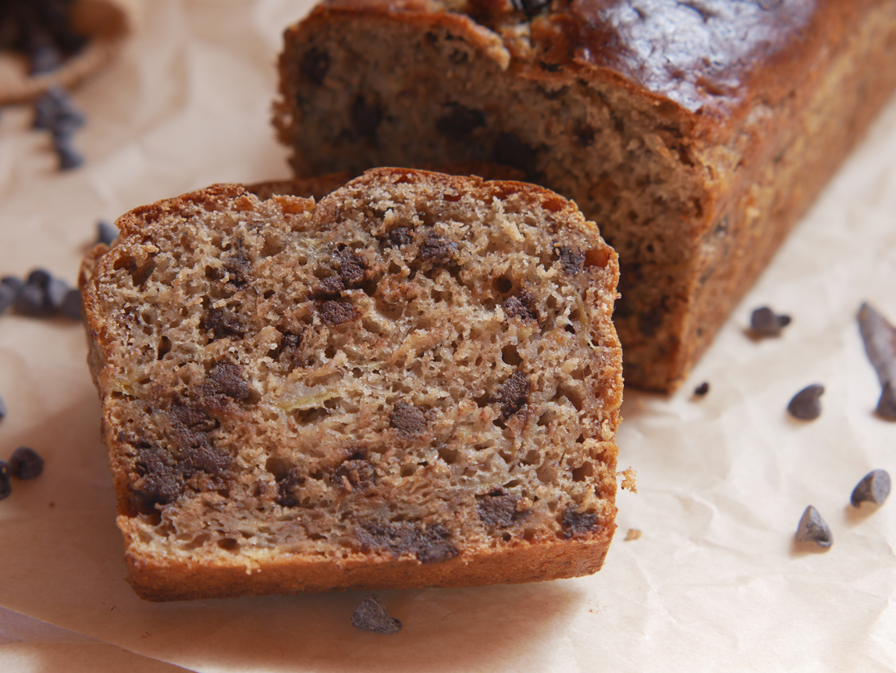

Healthy Moist Banana Bread

Description
Ultra moist banana bread... This recipe is healthy and vegan!
Ingredients
- 3 medium ripe bananas
- 1/3 cup (80g) reduced aquafaba
- 1 cup (120g) Greek-style soy yogurt, plain and unsweetened
- 1 tbsp apple cider vinegar
- 1 tsp pure vanilla extract
- 2 cups (240g) all-purpose flour
- 1/2 cup (80g) brown sugar
- 1/4 tsp salt
- 1 tsp baking soda
- 2 tsp baking powder
- 1/2 cup (80g) chocolate chips
- 1/2 tsp cinnamon
Steps
- In a bowl, mix all the dry ingredients together.
- In another bowl, mash the bananas then add all the wet ingredients except the aquafaba.
- Preheat the oven at 360°F (180°C).
- Whip the aquafaba.
- Gently fold the aquafaba into the wet ingredients, then the wet ingredients into the dry ingredients.
- Add the chocolate chips – do not overmix.
- Pour the batter into a loaf pan and bake in the oven for 50 min at 360°F (180°C).
- Wait until the banana bread cools down a bit before removing the loaf from the pan and let it cool down completely on a rack.